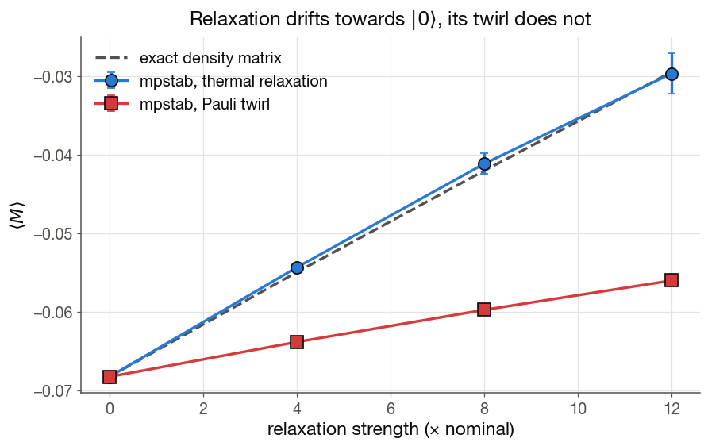
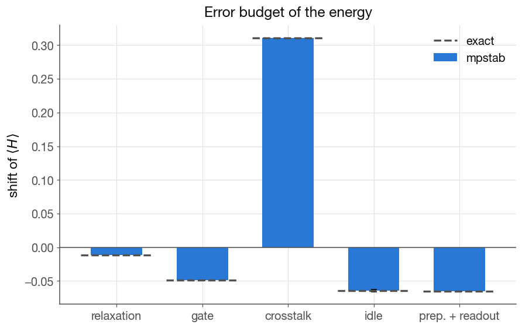

Device-level noise¶
The “Noisy simulation” tutorial placed Pauli and coherent errors after gates. Real devices do more: qubits relax towards \(|0\rangle\), two-qubit gates disturb their neighbours, waiting qubits keep decohering, and states are prepared and read out imperfectly. In this tutorial you will build such a device noise model, check it against an exact density matrix, find which error source matters most, and see why relaxation and coherent crosstalk cannot be replaced by simpler Pauli noise.
Setup¶
[1]:
import time
import matplotlib.pyplot as plt
import numpy as np
from qibo import gates
from mpstab import HSMPO
from mpstab.hamiltonians import pauli_string_to_hamiltonian
from mpstab.models.ansatze import ParametricKickedIsing
from mpstab.models.noise import (
CoherentError,
DepolarizingError,
NoiseModel,
PauliError,
ReadoutError,
StatePreparationError,
ThermalRelaxationError,
)
from mpstab.plotting import COLORS, set_style
set_style()
The circuit and the observables¶
As in the first noise tutorial, we use three steps of a kicked Ising chain on 8 qubits, whose two-qubit gates are CNOTs. We look at two observables: the nearest-neighbour energy \(H = \sum_i Z_iZ_{i+1}\), and the magnetization \(M = \frac1n\sum_i Z_i\), on which relaxation acts most directly.
[2]:
NQUBITS = 8
ansatz = ParametricKickedIsing(nqubits=NQUBITS, n_steps=3, delta_h=0.2)
circuit = ansatz.circuit
hsmpo = HSMPO(ansatz, progress=False)
def z_string(*sites, n=NQUBITS):
return "".join("Z" if q in sites else "I" for q in range(n))
energy = {z_string(i, i + 1): 1.0 for i in range(NQUBITS - 1)}
magnetization = {z_string(i): 1.0 / NQUBITS for i in range(NQUBITS)}
print(f"noiseless <H> = {hsmpo.expectation(energy):+.5f}")
print(f"noiseless <M> = {hsmpo.expectation(magnetization):+.5f}")
noiseless <H> = +0.56761
noiseless <M> = -0.06829
A device noise model¶
The qubits sit on a line. Times are in microseconds, with values typical of superconducting devices: \(T_1 = 100\), \(T_2 = 80\), single-qubit gates of 30 ns and CNOTs of 80 ns. Besides add, two more rules place errors where devices put them:
source |
error |
rule |
|---|---|---|
relaxation during gates |
|
|
two-qubit gate error |
|
|
crosstalk |
coherent \(ZZ\) between a CNOT qubit and its neighbours |
|
idling |
relaxation, and a residual \(ZZ\) on idle coupled pairs |
|
preparation and readout |
|
|
add_idle acts on the qubits left idle in each moment (layer) of the circuit. A coherent error costs about as much as a magic gate, so for the always-on idle \(ZZ\) we use CoherentError.twirled(), the stochastic error it becomes under randomized compiling or dynamical decoupling.
We wrap the model in a function, so that later we can switch sources on one at a time, and replace an error by its Pauli twirl (the Pauli channel with the same diagonal, which pauli_twirl computes from the Kraus operators).
[3]:
T1, T2 = 100.0, 80.0 # microseconds
T_1Q, T_2Q = 0.03, 0.08 # gate durations
LINE = [(q, q + 1) for q in range(NQUBITS - 1)]
SOURCES = ("relaxation", "gate", "crosstalk", "idle", "spam")
PAULIS = {"X": np.array([[0, 1], [1, 0]]), "Y": np.array([[0, -1j], [1j, 0]]), "Z": np.diag([1, -1])}
def pauli_twirl(error):
return PauliError({p: float(sum(abs(np.trace(m @ k)) ** 2 for k in error.kraus) / 4)
for p, m in PAULIS.items()})
def device_noise(sources=SOURCES, crosstalk=0.03, coupling=LINE,
twirl_relaxation=False, twirl_crosstalk=False):
def relax(time):
error = ThermalRelaxationError(T1, T2, time)
return pauli_twirl(error) if twirl_relaxation else error
zz = CoherentError("ZZ", crosstalk)
noise = NoiseModel()
if "relaxation" in sources:
noise.add(relax(T_1Q), (gates.RX, gates.RZ, gates.H))
noise.add(relax(T_2Q), gates.CNOT)
if "gate" in sources:
noise.add(DepolarizingError(5e-3), gates.CNOT)
if "crosstalk" in sources:
noise.add_crosstalk(zz.twirled() if twirl_crosstalk else zz, coupling, gates.CNOT)
if "idle" in sources:
noise.add_idle(relax(T_2Q))
noise.add_idle(CoherentError("ZZ", 0.02).twirled(), coupling=coupling)
if "spam" in sources:
noise.add(StatePreparationError(0.005))
noise.add(ReadoutError(0.01, 0.03))
return noise
noise = device_noise()
print(len(noise.events(circuit)), "errors inserted in the circuit")
926 errors inserted in the circuit
Checking against the exact density matrix¶
noise.apply(circuit) gives the same noisy circuit as a qibo density-matrix circuit, and noise.readout_observable folds the readout errors into the observable. Together they give the exact value on small systems.
[4]:
def exact_expectation(noise, observable):
constant, terms = noise.readout_observable(observable, NQUBITS)
rho = noise.apply(circuit)().state()
return constant + sum(
c * pauli_string_to_hamiltonian(p).expectation_from_state(rho) for p, c in terms.items()
)
start = time.perf_counter()
result = hsmpo.noisy_expectation(energy, noise, n_samples=300, seed=0)
elapsed = time.perf_counter() - start
print(f"noiseless <H> = {hsmpo.expectation(energy):+.5f}")
print(f"mpstab <H> = {result.mean:+.5f} ± {result.stderr:.5f} ({elapsed:.0f} s)")
print(f"exact <H> = {exact_expectation(noise, energy):+.5f}")
noiseless <H> = +0.56761
mpstab <H> = +0.61633 ± 0.00552 (39 s)
exact <H> = +0.62524
The two agree within the statistical error. The error bar is larger than for Pauli noise: the non-Pauli part of relaxation turns the sampled average into a quasi-probability average, as explained at the end of this tutorial. More samples (n_samples) shrink it.
Relaxation is not a Pauli channel¶
Relaxation pushes every qubit towards \(|0\rangle\), so it is not a Pauli channel. A common shortcut replaces it by its Pauli twirl, the Pauli channel with the same diagonal. The twirl keeps the loss of coherence but drops the drift towards \(|0\rangle\). mpstab simulates the full channel, so we can see the difference: below we keep only relaxation during gates, make it longer with noise.scaled, and follow the magnetization.
[5]:
relaxation = device_noise(sources=("relaxation",))
twirled = device_noise(sources=("relaxation",), twirl_relaxation=True)
factors = np.array([0, 4, 8, 12])
curves = {}
for name, model in (("thermal relaxation", relaxation), ("Pauli twirl", twirled)):
curves[name] = [hsmpo.noisy_expectation(magnetization, model.scaled(f), n_samples=1000, seed=0)
for f in factors]
exact_curve = [exact_expectation(relaxation.scaled(f), magnetization) for f in factors]
[6]:
fig, ax = plt.subplots()
ax.plot(factors, exact_curve, "--", color=COLORS["gray"], label="exact density matrix")
for (name, results), marker in zip(curves.items(), ("o", "s")):
ax.errorbar(factors, [r.mean for r in results], yerr=[r.stderr for r in results],
fmt=marker + "-", label=f"mpstab, {name}")
ax.set_xlabel("relaxation strength (× nominal)")
ax.set_ylabel(r"$\langle M \rangle$")
ax.set_title("Relaxation drifts towards $|0\\rangle$, its twirl does not")
ax.legend()
plt.show()

The error bars of the full channel grow with the relaxation strength. That is the price of its non-Pauli part, explained at the end of this tutorial: it turns the sampled average into a quasi-probability average, whose variance grows quickly with the strength of the channel.
Error budget¶
Which source matters most? We switch the sources on one at a time and compare the shift of the energy from its noiseless value. Each source alone takes only a second or two; the full model costs more, because errors at different locations combine.
[7]:
ideal_energy = hsmpo.expectation(energy)
shifts, errors, exact_shifts = [], [], []
for source in SOURCES:
alone = device_noise(sources=(source,))
result = hsmpo.noisy_expectation(energy, alone, n_samples=500, seed=1)
shifts.append(result.mean - ideal_energy)
errors.append(result.stderr)
exact_shifts.append(exact_expectation(alone, energy) - ideal_energy)
[8]:
fig, ax = plt.subplots()
x = np.arange(len(SOURCES))
ax.bar(x, shifts, yerr=errors, width=0.6, label="mpstab")
ax.hlines(exact_shifts, x - 0.42, x + 0.42, color=COLORS["gray"], ls="--", label="exact")
ax.axhline(0, color=COLORS["gray"], lw=1)
ax.set_xticks(x, ["relaxation", "gate", "crosstalk", "idle", "prep. + readout"])
ax.set_ylabel(r"shift of $\langle H \rangle$")
ax.set_title("Error budget of the energy")
ax.legend()
plt.show()

Coherent or twirled crosstalk?¶
The coherent crosstalk dominates the budget. That is no accident: the couplings of this circuit are themselves \(ZZ\) rotations, so a spurious \(ZZ\) on a neighbouring pair shifts the Ising angles directly, and these shifts add up coherently, in amplitude, step after step.
Randomized compiling turns the same error into its Pauli twirl, a stochastic \(ZZ\) flip with probability \(\sin^2(\theta/2)\), which only adds up in probability. Sweeping the crosstalk angle \(\theta\) shows the difference: the coherent shift grows like \(\theta\), the twirled one like \(\theta^2\).
[9]:
angles = np.array([0.005, 0.01, 0.02, 0.04, 0.08])
coherent, twirl = [], []
for theta in angles:
for twirl_crosstalk, values in ((False, coherent), (True, twirl)):
model = device_noise(sources=("crosstalk",), crosstalk=theta, twirl_crosstalk=twirl_crosstalk)
values.append(hsmpo.noisy_expectation(energy, model).mean)
[10]:
fig, ax = plt.subplots()
ax.loglog(angles, np.abs(np.array(coherent) - ideal_energy), "o-", label="coherent")
ax.loglog(angles, np.abs(np.array(twirl) - ideal_energy), "s-", label="twirled")
ax.set_xticks(angles, [f"{a:g}" for a in angles], minor=False)
ax.minorticks_off()
ax.set_xlabel(r"crosstalk angle $\theta$")
ax.set_ylabel(r"$|$shift of $\langle H \rangle|$")
ax.set_title("Coherent errors add up in amplitude")
ax.legend()
plt.show()

The twirled error is also cheaper to simulate: every coherent rotation joins the chain of magic rotations, while a stochastic error leaves it alone.
Beyond density matrices¶
The device model runs unchanged on chains no density matrix can hold. Two choices keep it cheap: we twirl the crosstalk, as randomized compiling would, so it does not lengthen the rotation chain; and we leave idling out, because this ansatz queues its couplings as a staircase, so its depth (and the number of idle windows) grows with \(n\). We measure a local \(Z_iZ_{i+1}\) in the middle of the chain, whose light cone has a fixed size.
[11]:
print(" n errors noiseless noisy time")
for n in (16, 60):
surrogate = HSMPO(ParametricKickedIsing(nqubits=n, n_steps=3, delta_h=0.2),
max_bond_dimension=32, progress=False)
line = [(q, q + 1) for q in range(n - 1)]
model = device_noise(sources=("relaxation", "gate", "crosstalk", "spam"),
coupling=line, twirl_crosstalk=True)
local = z_string(n // 2, n // 2 + 1, n=n)
start = time.perf_counter()
result = surrogate.noisy_expectation(local, model, n_samples=500, seed=3)
print(f"{n:3d} {len(model.events(surrogate.ansatz.circuit)):5d} {surrogate.expectation(local):+.4f}"
f" {result.mean:+.4f} ± {result.stderr:.4f} {time.perf_counter() - start:4.1f} s")
n errors noiseless noisy time
16 595 +0.1123 +0.0894 ± 0.0003 4.0 s
60 2355 +0.1123 +0.0892 ± 0.0004 10.8 s
Summary¶
noise = NoiseModel()
noise.add(ThermalRelaxationError(t1, t2, gate_time)) # T1/T2 during gates
noise.add(DepolarizingError(5e-3), gates.CNOT) # gate error
noise.add_crosstalk(CoherentError("ZZ", 0.03), coupling, gates.CNOT) # spectators
noise.add_idle(ThermalRelaxationError(t1, t2, moment_time)) # idle qubits
noise.add_idle(CoherentError("ZZ", 0.02).twirled(), coupling=coupling) # idle pairs
noise.add(StatePreparationError(0.005)) # |0> prepared as |1>
noise.add(ReadoutError(0.01, 0.03)) # asymmetric readout
result = hsmpo.noisy_expectation(observable, noise, n_samples=1000, seed=0)
AmplitudeDampingError, ThermalRelaxationError and KrausError (any Kraus operators) are simulated exactly, and noise.scaled(factor) scales their damping rates and relaxation times as well.
Under the hood. Any channel can be written as \(\mathcal{E}(\rho) = \sum_{A,B} \chi_{AB}\, A\rho B\) with Paulis \(A, B\). The diagonal \(\chi_{AA}\) is the Pauli twirl and is handled as Pauli faults. The off-diagonal terms act with \(A\) on the ket and \(B\) on the bra, and contribute transition amplitudes between two MPS; result.n_transitions counts them. Their weights \(|\chi_{AB}|\) make the sampled part a quasi-probability, so for non-Pauli noise the entries
of result.stratum_weights can sum to more than one, and more samples are needed for the same error bar.